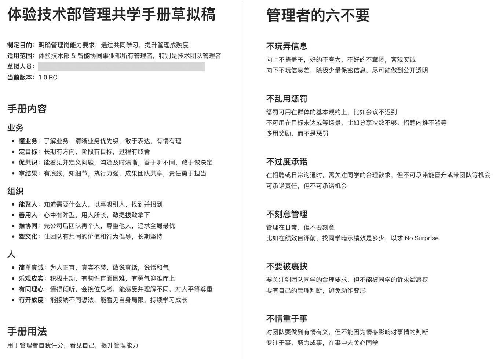

- 00 开篇词 蚂蚁集团玉伯：人生不设限.md.html
- 01 从页面仔到工程师，前端到底在发挥什么价值.md.html
- 02 何为体验：把简单留给用户，也把简单留给自己.md.html
- 03 终端技术：浅谈小程序与客户端的发展.md.html
- 04 开源三大收获：异步协同、文档优先与快乐工作.md.html
- 05 蚂蚁内部开源：迈出第一步，但还有很长路要走.md.html
- 06 从淘宝到支付宝：几次项目失利，但创新产品之心未死.md.html
- 07 产品故事：语雀两度生死局.md.html
- 08 产品经理能力进阶：用户洞察、抽象设计到看到远方.md.html
- 09 个人成长关键词一：全情投入.md.html
- 10 个人成长关键词二：守正出奇.md.html
- 11 个人成长关键词三：愿等花开.md.html
- 12 作为创新产品聚集地，体验技术部成长土壤从何来.md.html
- 13 行业内口碑第一的前端团队，如何打造文化.md.html
- 14 管理能力提升：曾经影响过的书籍和启发过我的人.md.html
- 15 从浆手、掌舵人到兜底人，管理者进阶的三阶段.md.html
- 结束语 我想聊的一些与技术无关的话.md.html
- 捐赠
14 管理能力提升：曾经影响过的书籍和启发过我的人
前面玉伯分享了管理者的职责，如何打造团队文化等话题，今天我们继续围绕管理话题，看看在管理这条路上，他是如何学习和实践的。
极客时间：你现在带了几个不同的团队，体验技术团队、小程序团队、语雀团队，有的是平台技术，有的就是业务技术团队，从管理上会有不同吗？会用不一样的管理办法么？
玉伯：这三个团队都不太一样。体验技术部是综合型团队，有业务支撑部分，也有基础设施部分。小程序团队是基础技术型团队，更偏重技术本身的发展。语雀团队是内部创业型团队，各种角色会更多。
业务支撑型团队，要懂业务，要对业务更理解，有一个基础考核是业务支撑效能，需要把业务支撑好，保证重点项目不延期。
基础技术型团队，要对技术本身有认知，要热爱技术，知道技术对业务的价值在哪，同时要对技术产品化有经验，能不断带领团队做出一个个技术产品，服务好业务，能说清楚价值所在。
从表面看，这两种团队类型，对管理者的要求不一样，但抛开表象看底层又是一样的。比如都需要对需求做出的判断，都需要在某个领域有专业积累，这个领域专业积累，可以是某个技术领域，也可以是某个业务领域，同时还都需要管理者有规划决策能力，能看见未来，能面对各种不确定性时，做出取舍权衡。很多能力上，是相通的，最终都需要能拿出业务成绩。
极客时间：考量是否能拿到业务成绩，这很有意思，如果做技术的同学都这样想的话，对于职业发展方向，其实思路会更广一些。那么做业务需求的人和做更底层基础技术的人，彼此间是如何认知的，可以说说你的观察么？
玉伯：做基础技术的同学，往往做着做着，想去做业务。做业务支撑的同学，往往做着做着，会想去做基础技术。这就是一个围城，城外的人想进去，城里的人想出来。
回到一线同学，这个围城带来的困惑非常常见。技术人对自身价值认知的不同，到现在为止都是一个普遍存在的问题。但这个问题很难解，靠沟通是解不掉的。体验技术部的做法是，尝试每隔半年，如果有做业务支撑的同学想去做基础技术，且也有这个能力的话，那就调整一下。反之也一样，让想做基础技术的同学，能选择去做做业务。
调整完成后，往往能让同学有完全不一样的感受。比如调整去做基础技术的，会刚开始很兴奋，但很快会发现，做基础技术也有一堆 bug 要改，也有各种项目排期，跟在业务线接需求是一样的。
这就是个围城。做基础技术的，也有很多同学觉得基础技术很难拿 3.75 绩效，基础技术很多是长周期，有同学就等不及，觉得做业务更容易拿到结果，公司很多奖项、聚光灯都是放在业务上的。每个基础技术方向，往往要做到一定阶段才会被看见，大部分情况下会在边缘，别人看不见，各有各的难处。
调完之后，最大的一个好处，是可以让做基础技术的和做业务支撑的同学，能彼此互相理解了，能真正感受到，原来都挺难。有些同学，能在调岗后，更善于去观察别人，同时开始更了解自己，知道自己原来更适合做业务，或者更适合做基础技术，自己的心就能安定了。心的安定，需要亲身去试试，很难通过沟通来解决。
极客时间：还有一个关于管理能力的问题，很多技术同学他可能不愿意做管理，或者做管理也是勉勉强强被任命推上去才去做的。你自己的体会是什么样的呢？
玉伯：技术人应不应该去做管理，我曾经也纠结过，担心做管理后很多事情会被管理工作耗掉，导致写代码的时间减少。这时团队里一些很优秀的年轻人，天天在写代码，天天在学新东西，你可能就会恐惧自己的技术能力跟不上。这是一个很现实的问题。技术人如果转做管理，这中间必然会有所失的。
目前我自己的心得就是，很多时候还是要回到对自己的认知，所谓认知就是要判断自己究竟更适合写代码，还是适合做管理。但确实，很多时候一线同学第一次做管理，是被任命的，往往缺少充分沟通的过程。
在和一线同学沟通时，你问他要不要带个团队，他说不愿意，这样的人也有，但是极少数。像这种同学，我觉得是很难得的，他清楚自己的能力和长处。也有很多同学尝试做管理之后，发现不适合，然后再回到原来的角色，这样的情况也正常。
但是整体来说，当一个同学变成管理者之后，只要他真的愿意往前迈一步，是可以具备管理能力的。我觉得可能有80%的成功率。往前迈这一步，就是逼迫自己走出舒适区。这个过程中，涉及如何提升管理能力。目前大部分互联网公司都没有什么培养体系，绝大部分技术管理同学主要都是靠自学成才。
极客时间：你还记得参加过的培训么，你觉得参加过的培训有用吗？
玉伯：很早时期参加过一些培训，觉得有用印象深刻的很少很少。现在还记得的，是曾经有个台湾讲师，来讲关于沟通交流的课程，核心是有个盒子模型，要沟通交流，需要双方能走出盒子（out of box）。当时我比较敢提问，老师对我印象很深，我对他印象也很深。
“out of box”是在讲沟通协作时，人必须打开自己，必须要有人从盒子里走出来，并且要把对方也从他的盒子里拉出来，然后再对话。我经历的培训只有这个课程让我印象深刻，而且对自己学会如何沟通对话感觉很有帮助。其他很多课程，感觉都是自己通过各种书籍里就已经知道的道理，很少有具体教会你怎么实践的。
极客时间：你觉得自己是自学成才类型的，那么你在管理上自学成才过程是什么样的呢？
玉伯：有两个路径，一是看书，一是实践。我会定期去看很多管理相关的书。到目前为止，对我影响最大的一套书是德鲁克的管理学书籍，德鲁克是人文和管理大师。我最近还在重刷他的一本书，叫《卓有成效的管理者》。德鲁克对我影响很大。
一本上个世纪写成的书，很多观点放到现在来看，仍然感觉每天在公司里发生。这本书里提到很多管理者容易踩的坑，比如说很多公司都会做人才盘点，盘完之后都会针对每个人做一些人才改进计划，录入到系统里，或者是用一个文档存下来。但这件事，在录到系统里后，往往就没有后续了。等真正要做一些人事决策的时候，很少有管理者反过来去看当初这些人才盘点里的想法。
德鲁克讲了一个案例，谈到有一个公司，CEO年纪轻轻意外去世了。这位CEO很厉害，在位时制定了很多公司的政策方案，包括怎么用人，包括人才盘点等整套东西。他的接任者，是之前公司的第二号人物，比原来的 CEO 年纪要大，在公司时间更长，他从没想过自己会当一号位。所以当这个年轻CEO故去后，他还挺苦恼的，应该怎么办？他做了一个很有意思的决策，就是看之前的人才盘点，并根据人才盘点里的建议，去推动执行。他每天会花一个小时去看这些曾经的档案，看的过程中会打电话给相关 Leader，问当初人才盘点完成后，计划补充或替换某某的建议，有没有具体落地实施。相关 Leader 一接到这种电话时，开始恐慌，想着“CEO天天给我打电话，看我当年制定的策略有没有执行”。于是因为CEO这个举动，整个公司大概花了一年后焕然一新，然后他就成为这个公司最伟大的CEO。
这个案例讲的是一个大家都懂的道理：行动改变一切。但真正能做到的，凤毛麟角。看书的过程中，会时常汗颜，发现里面讲的很多错误自己曾经也犯过。看书是一方面，但做管理不能停留到书本上，最终要落实到行动，管理者更大的成长就在于实践。
比如说，最简单的管理实践之一，就是一对一沟通。这在管理上是非常重要的东西，但这个东西其实说起来很简单，就是作为一个 Leader，你得跟下面同学保持一定频率的沟通。你不沟通的话，其实永远不知道这个团队真实处于什么样的状态，或者你的感知很容易被一些传到你耳朵里的声音给蒙蔽掉，你不会知道一些真实的声音。一对一沟通我觉得是管理日常中很重要的部分。
另外，德鲁克《卓有成效的管理者》里面还有一点对我影响也很大，就是他在解释“成效”是什么。成效就是成果加效率。他有一个非常强的观点，就是成果永远来自外部。你在团队内部一对一沟通当然很重要，但是你如果永远做内部沟通，你就最多只能把自己的团队整理得很好，可能会提升一点效率，但是无法产生成果。
之前我也觉得把自己工作做好可能就好了，但是最后发现根本不是这么回事，管理者在保证内部稳定成长的情况下，更多的精力，最好80%以上的精力应该是向外看，去跟你的合作伙伴、客户、用户去交流，在这个层面上才会产生真正的成果和效益。
我自己在管理方面的成长，我特别感谢的就是德鲁克。
极客时间：刚刚说你看德鲁克的书，里面讲到的很多管理者会犯的错误你都犯过，具体指哪些，可以举个例子么？
玉伯：好多例子。比如德鲁克说要用人所长，核心要看这个人他能不能成事，他的缺陷你并不需要去在乎，甚至你都可以不知道。这个观点让我反思自己以前的想法。
比如说我六七年前要去提拔一个 Leader 时，会综合考虑这个人的方方面面，最好是技术要好，又懂业务，同时人很正直、脾气好，沟通能力也强。各方面希望他是一个很好的人，当然肯定有这样的人，但是很难找，对我是个挑战。而且我发现等要给他打绩效或者是做评价时，管理者很容易去看人的短处。包括现在很多刚做管理者的同学也会犯这个错误，经常会说“你在某块做得挺好的，但是……”，这个“但是”后面就跟一句话也行，很多人“但是”后面能说出个一二三四五条，这就不是用人所长了，而是盯人所短，非常不好。这种错误，很多管理者都会犯。
用人所长，需要有意识地去看一个人的核心优势所在，去想某件事情让谁去做最有可能做成，以这个方式去想，能少掉很多纠结。我早期会说扬长补短，但是到后期我们只说扬长避短，甚至扬长就好了。
比如说有些岗位就是要有冲劲儿的，甚至就是要说话很简单直接的，而不是说有高情商沟通能力的人，那我就去找这个说话直接的人来干。也许他在沟通上会跟对方产生矛盾，但这没关系，他能把问题暴露出来，反而可能推动整件事情快速往前推进。
用人所长，需要懂得什么样的事情需要什么样特征的人才，同时也需要看懂每个 Leader 的特质，这样才能把合适的人放到合适的岗位上去，让大家的才华都能尽可能发挥出来。
极客时间：你现在和一线同学的沟通，除了一对一这种形式之外，还有什么通道吗？
玉伯：好多。现在更多的沟通其实都是基于文档的，我会直接点赞回复，大家也习以为常。比如说直接回复同学的各种文档。这也是我们团队的一个习惯，好像因为我这么做，所以下面同学也会这么做，大家会比较习惯这种方式。有些新同学刚开始会不太习惯，感觉 Leader 回复了会很紧张，但隔上几个月，发现这就是团队的风格，很正常，也就习惯了。
极客时间：现在很多年轻的新同学加入一家公司，确实特别有斗志，也特别有热情，但有时候领导会觉得他某件事做得没那么好，但他自己觉得特厉害，这种情况你怎么去纠偏，你会怎么帮助他更踏实下来？
玉伯：这个情况确实存在，团队里确实有不少同学，特别是新入职的、学校又好的同学，他可能从来没怎么经历过挫折，会对自己的要求和期待都很高。
经常出现的一个情况，就是这位同学会给自己打很高的绩效。比如打绩效都不是打3.75，而是直接给自己打4分。这个时候我觉得在目标设定和绩效评估这两个环节要非常严肃地跟他聊，我会很正式地约一个会议，叫上他的主管、HR，还有我，几个人一起沟通，说明白为什么绩效结果并没有达成心中的3.75甚至4。
对这部分同学我们定目标的时候可以拔高一些，这样的人很优秀，对自己有要求，可以让他做一些更有难度的事情，同时在绩效评估时，给到客观合理的分数。那句老话还是挺对的，叫做没有拿过3.25的人生是不完整的，当然这个话现在很少说了，因为任何人的人生都是完整的，所以这句话是一个有时代感的东西，目前很少这么说了，更多是说人要经历过一些低谷才会成长得更快。对这类同学，要求要高，同时评估要客观合理。
极客时间：还有一类同学，可能和上面这种不太一样，他们也很优秀，做事情也很精益求精，但他们给自己的评价没那么高，或者不敢自己争取更高的机会或者待遇，有没有遇到这种情况？对这种同学你会怎么办，怎么样激发他、鼓励他大胆地去争取自己应该有的机会和权益呢？
玉伯：这种同学确实也有，比前面那种少一些，一般来说这种人对自我要求很高，而且谦虚到老是给自己打3.5-甚至3.25，也有这类同学。
对待这类同学，日常一定要给到一些肯定、鼓励，这样同学在日常就能感受到。但单通过沟通很难改变同学对自己的看法，这时更考验的是 Leader，作为 Leader 如何帮助同学提升自信，Leader 需要更主动为同学争取权益，对同学多些肯定，让同学对自己的认知慢慢能来回客观合理的水位。
这些情况，反映的都是人性问题。佛教里谈人性最基础的就是贪嗔痴，贪是什么？就是你想要、想得到，或者想靠近的东西。嗔是什么？就是你不想要、想远离的东西。痴是什么？并不是痴情的痴，而是白痴的痴，就是你也不知道想要啥，你也不知道自己喜欢什么，这种叫做痴。
在佛学里，有十二轮回图，会用动物形象去比喻贪嗔痴。贪一般是用鸽子去描述，寓意就是鸟类吃东西很贪，这也是为什么很多广场里面会提醒游客不要喂食，因为鸟会一直吃下去，会吃出问题，鸟在佛教里代表着贪。嗔一般形象是蛇，人一看到蛇就会很容易心生恐惧，想远离，这个就是嗔。痴的形象一般是用猪来表示，猪看起来很笨，成为了痴的代表。
回头再看管理，会发现像刚才的分析的两类人，一类是自我认知比较高，一类是自我要求很高。第一种自我认知很高的人，往往是嗔这块有问题，他可能从小被捧着长大，对不认可的东西会默默远离，他看到3.25就是不喜欢，内心里就是觉得自己很优秀应该打3.75，他看起来好像是自信满满，但实际上我觉得很多时候是在嗔的层面上没有经受过恐惧，也许他不知道怎么面对恐惧。当他真正经历过一些低谷，敢于正视内心恐惧的时候，就克服了嗔，后续就能更好地认识自己。
第二种是自我要求很高的人，很多时候是因为从小缺少关爱，他得到的认可是有些欠缺的，所以解他的困境，就是在日常中慢慢让他知道自己原来不是那么差，其实能力很强。但这个需要时间，而且还挺难改的。在心理学中，弗洛伊德说，人的过往经历对现在的你影响很大，这个我其实不大认同，我还是提倡阿德勒的理论，就是未来决定一个人，你对未来的一些憧憬会让你发生改变。自我要求很高的人，在管理上，可以适度激发他的“贪”并满足，让他能更自信一些。
对于痴的人，我不会招进来。但是痴这种情况，在工作中也经常能发现，特别是跨领域沟通时。有些团队互相吵架，就是因为互相对彼此是痴的状态，我不理解你的领域，你不理解我的领域，这个时候核心就是要打破痴的状态，去了解彼此的领域是怎么回事，把互相的痴解掉，就会少掉很多矛盾。
不论是做产品还是做管理，我觉得必须要“懂人性”，还是蛮关键的。我对张小龙印象深刻，是他的洞察能力很强。很早以前有一次去广州参加微信公开课，当时微信有个同学就带我进去参观，去到张小龙办公室门口，当时大概 11 点多，他还没上班，我们就在那里拍照合影。拍着拍着感觉好像有一个人在看我们，那个人就是张小龙，我们在那里摆拍时，他已经走过来了，但他看到我们在拍照，他就默默站在那里不动，等我们拍完之后才过来。这种细节里，折射的也是张小龙的懂人性。
懂人性这个词很容易被误解，觉得是一个贬义词。但如果你想成为一个好的管理者，想成为一个好的产品经理，对人性的洞察是非常关键不可或缺的。
极客时间：在管理这块，德鲁克给你影响很大。那在你身边的人呢，有没有对你在做管理、带团队、做文化这些方面产生过影响的人，或者你可以从别人身上学到的可以去借鉴的东西？
玉伯：说起来，对我影响最大的一个人，是当时蚂蚁的CTO鲁肃的影响很大，体验技术部的成立跟鲁肃也有关系。他对我的要求就一句话：蚂蚁前端遇到任何问题，玉伯你要搞定。他给了我一种放养式的信任，或者说是托付式的信任，会让我觉得自己责任很大，从而愿意非常独立自主地去做好体验技术部。
鲁肃还有一个对我影响很大的点，是谦卑。鲁肃真的是一个谦谦君子，永远保持一种“空杯心态”，他的空杯能从行为上体现出来。举个例子，鲁肃还是我主管的时候，我每年的规划要向他做汇报。这个时候，鲁肃会认真在听，同时拿个本子认真在记，会跟我说，前端这块玉伯你是专业的，我不懂，玉伯你给我讲讲这块是怎么回事。非常谦卑。
但同时鲁肃又很专业。他的专业在于我讲了一个小时之后，他记了很多点，然后他真的在接下来半个小时能给到我实打实的建议。他会从过往经验里，通过横向类比的方式给我一些帮助，有非常具体建议，比如某个方向你要再考虑一下谁的意见，某个点要怎么去想，他能够给我一些有帮助的建议。鲁肃对人的谦卑又专业的态度，让我非常佩服。
在管理这条路上，我也是从点滴日常里向他学习。我曾经说话有些结巴、很紧张，后来鲁肃给我推荐了一本书，里面讲的也是管理里面很有名的一个案例：人才分两种类型，一种是善于说的，一种是善于写和读的。鲁肃会跟我说，玉伯你别紧张，你回去给我写份邮件吧，你是能表达好的。他通过这种方式引导我成长。我也是因为这个原因，一直保持着良好的写作习惯。
还有一个人对我影响比较大，就是行癫。我和他接触后发现，原来一个做技术的人心中，是可以如此满眼是产品。他坚定了我一边做技术一边做产品的信念。他是典型的从做技术到做产品，到带业务的人。我看到一个人做事原来可以这么投入，行癫那种热情和那种做事的决心，对我影响很大。
小结时刻
最后，做一个延伸分享，关于玉伯带领的体验技术部对管理团队的要求，通过图片方式展示给你，包含了“体验技术部管理共学手册”和“管理者的六不要”，也欢迎你在评论区交流对管理培训、管理学习方式的看法，我们下一讲再见！

© 2019 - 2023 Liangliang Lee. Powered by gin and hexo-theme-book.